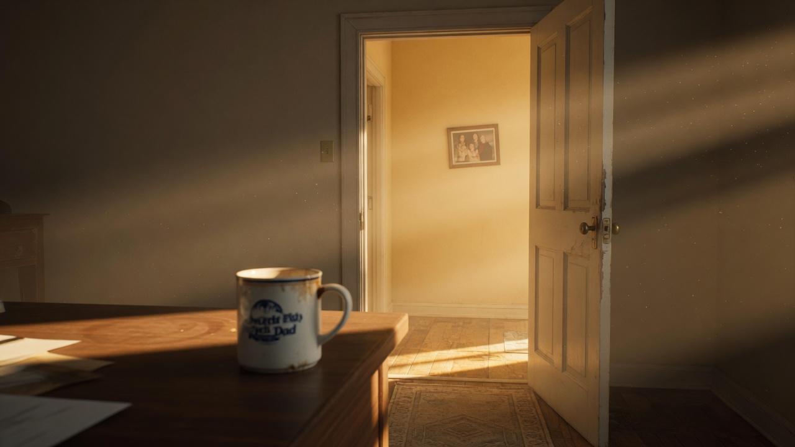
#01 The Same Door, The Same Hum
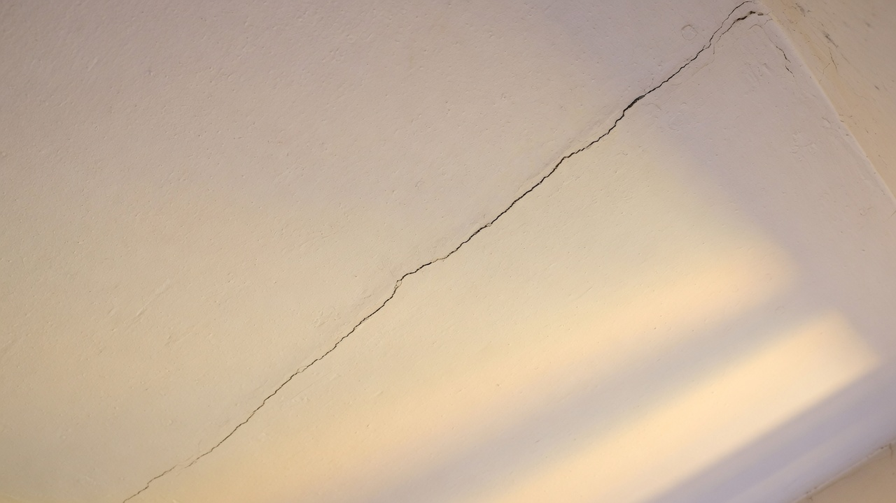
#02 The Cracked Ceiling Memory
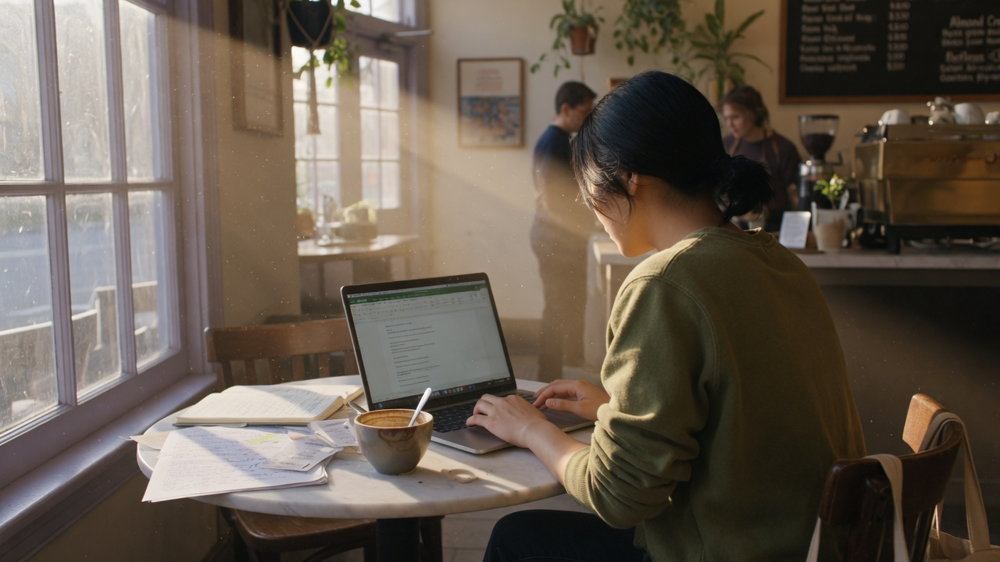
#03 The Coffee Shop Focus
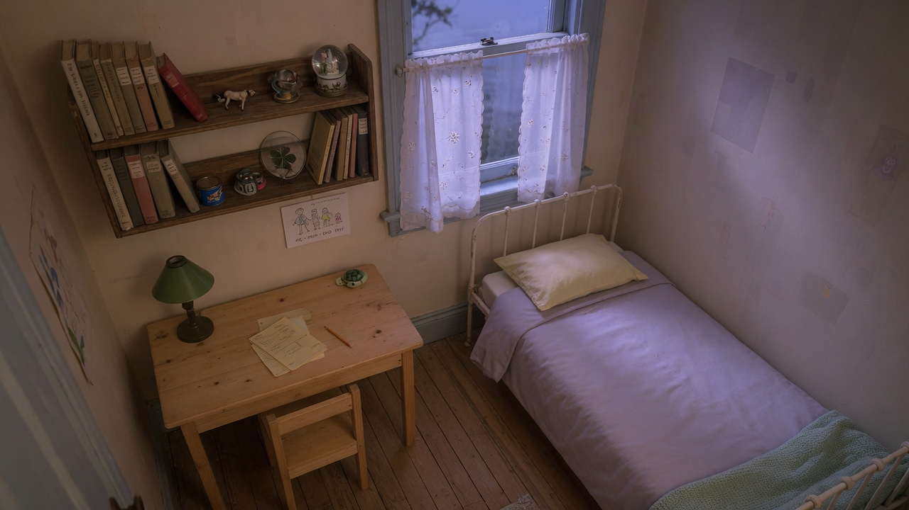
#04 The Childhood Bedroom Scale
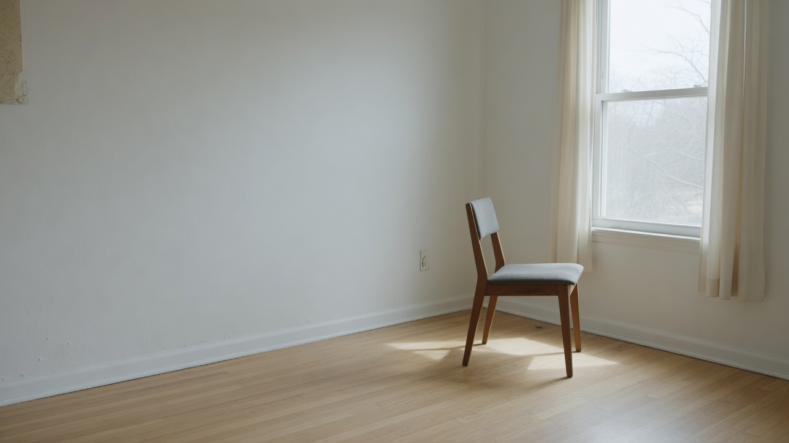
#05 The Apartment That Remembers Falling Apart
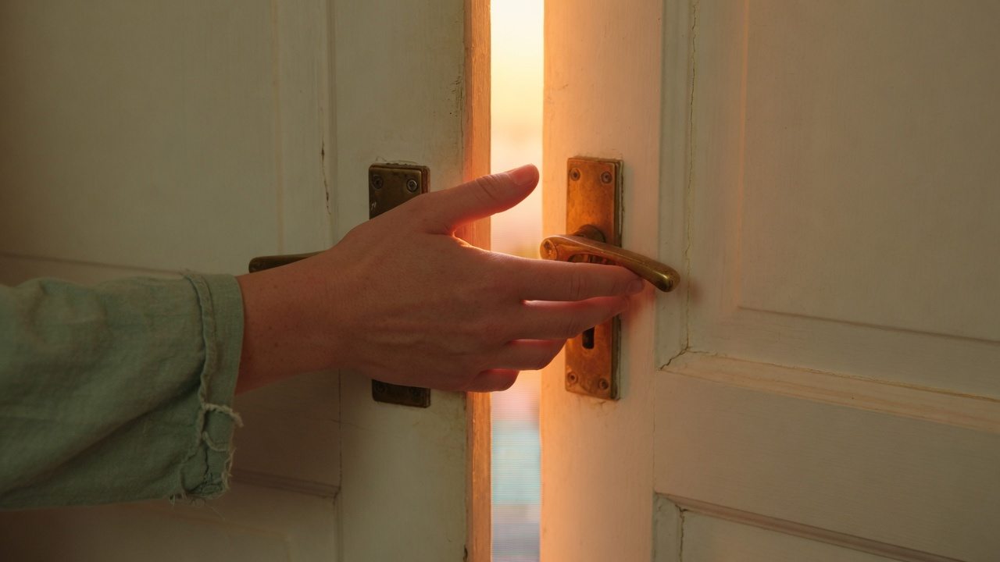
#06 Therapy Insight at the Front Door
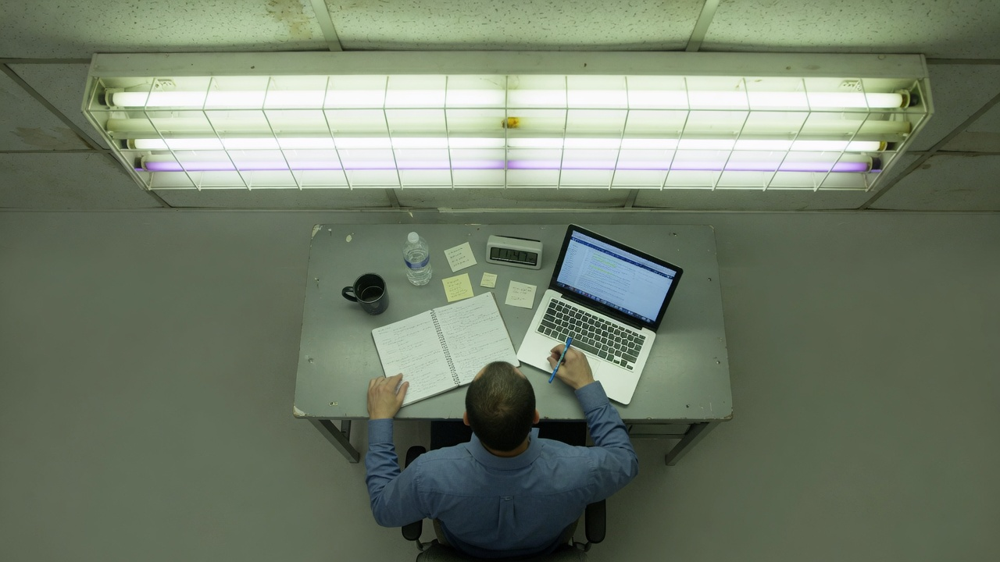
#07 The Parallel Computation of Fluorescent Light
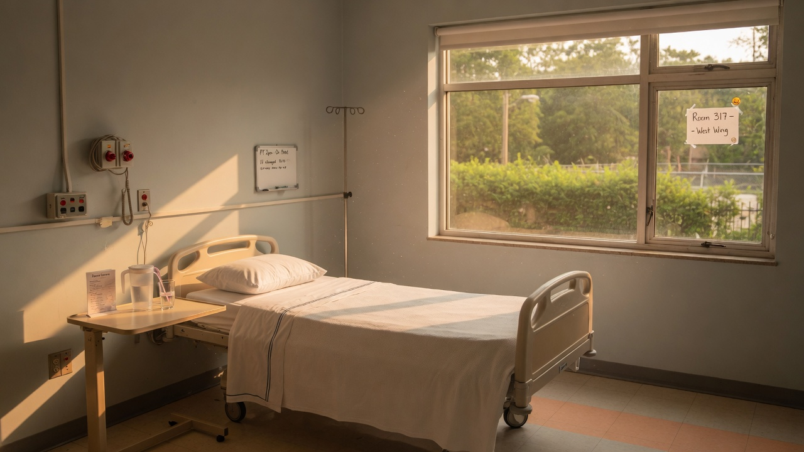
#08 The Hospital Room with the Window
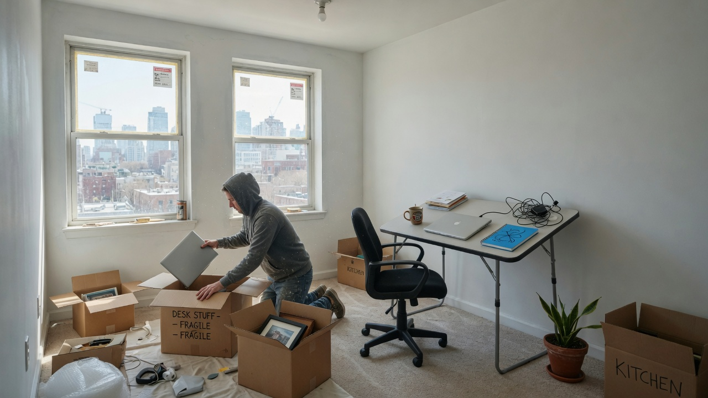
#09 The New Apartment, Same Patterns
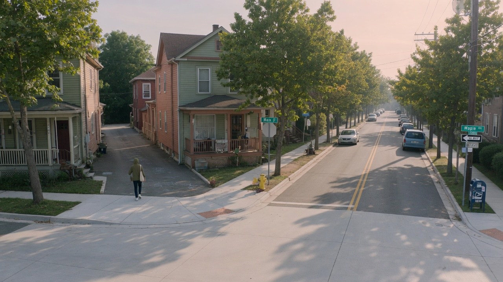
#10 Behavioral Activation: The Different Route
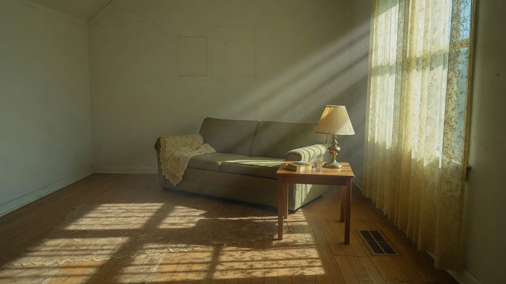
#11 The Room That RemembersHERO
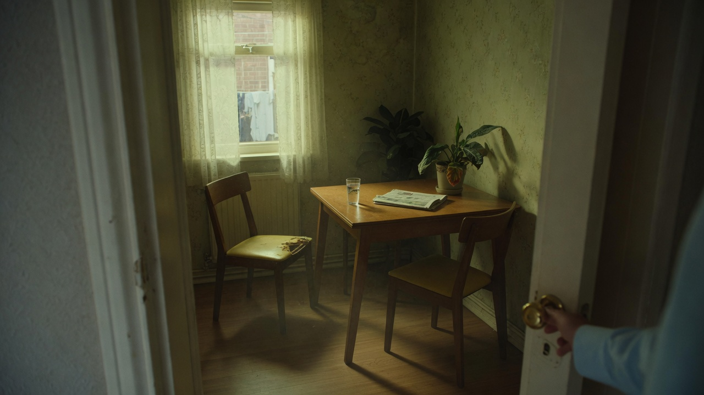
#12 The Uneasy Room Before Conscious Recognition
#13 The Clutter in Peripheral Vision
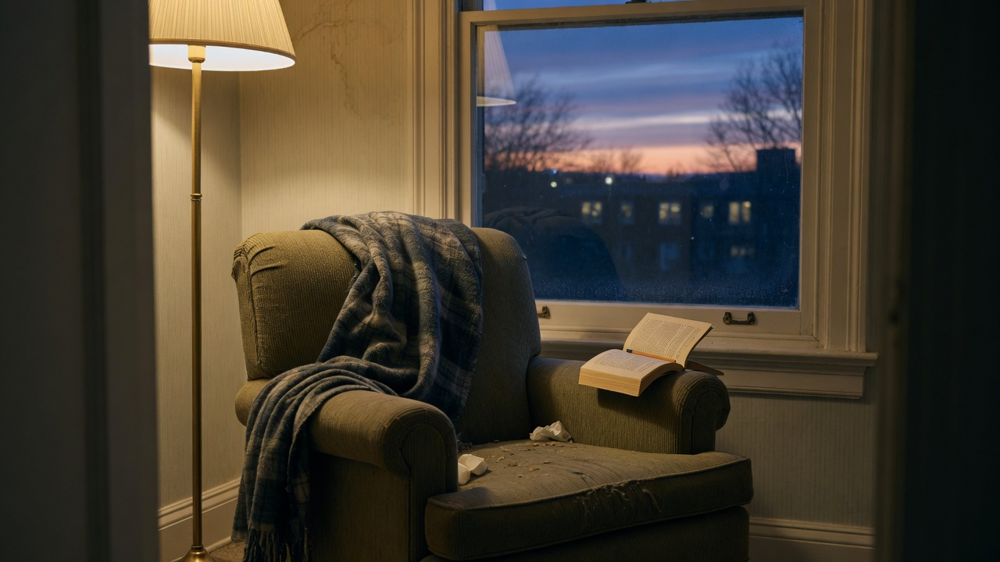
#14 The Chair Where You Ruminate
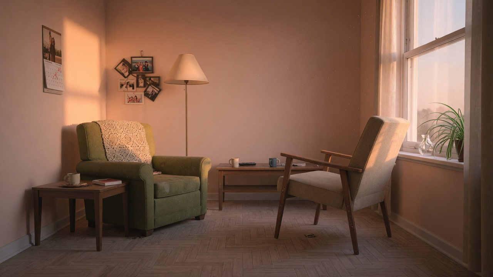
#15 Changing Where You Sit for Difficult Conversations
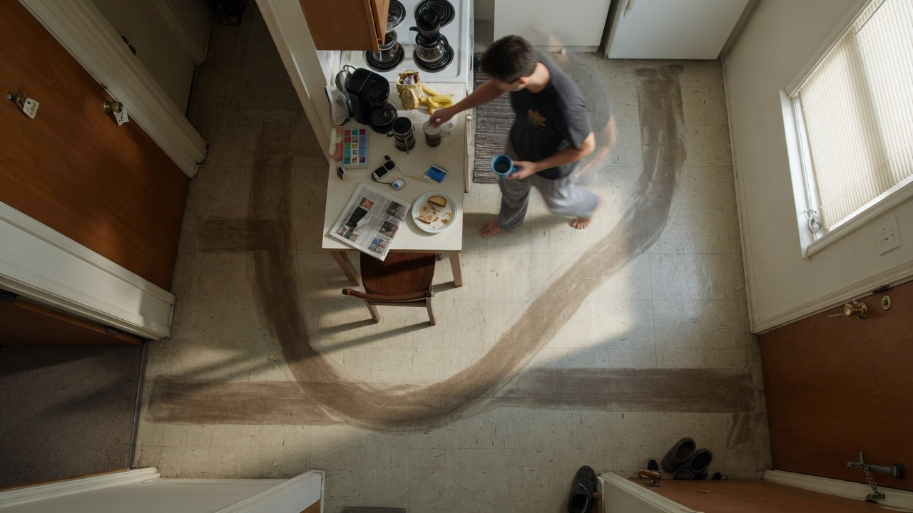
#16 The Morning Routine's Physical Path
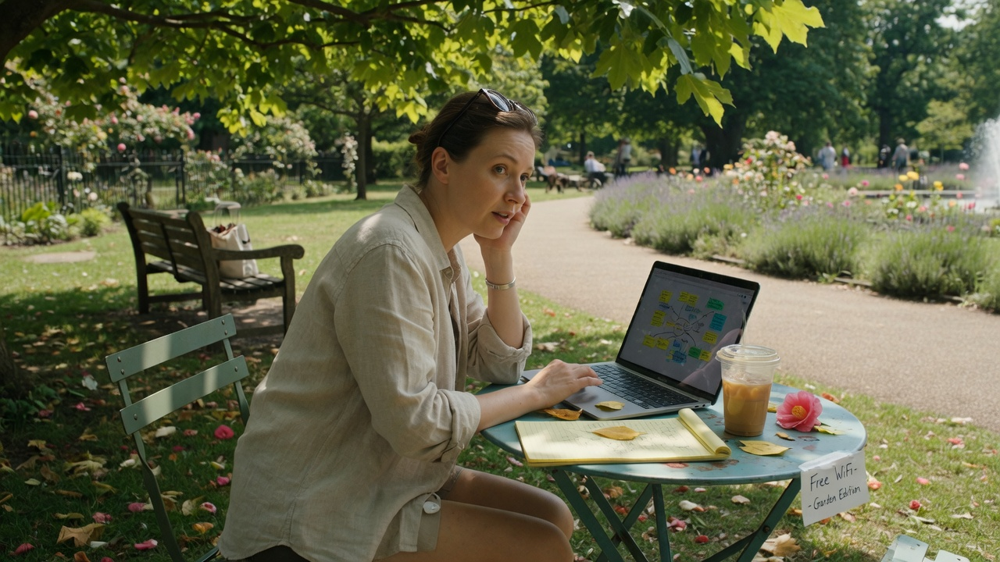
#17 Working in a Different Location
#18 The Circadian Lighting Intervention
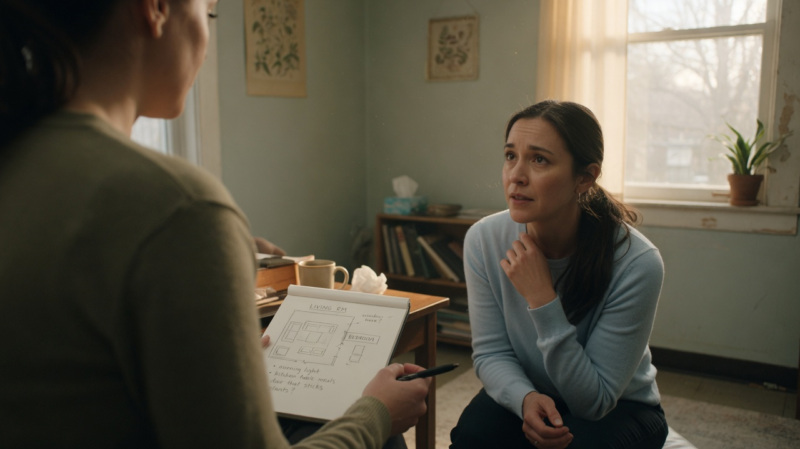
#19 The Living Situation Interview
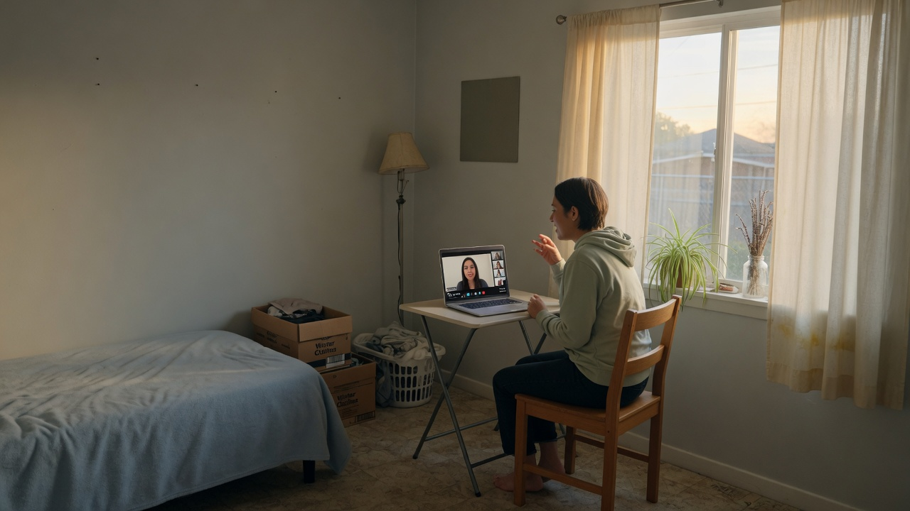
#20 Talking From a Different Room